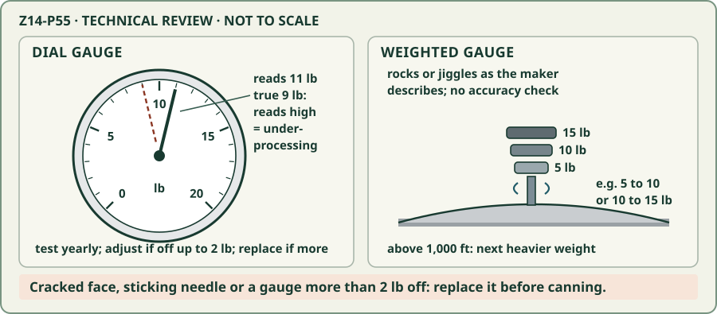

Z14-P55 · Food production and preservation · New manuscript
Test dial-gauge pressure canners annually and know weighted-gauge steps
Prevent silent under-processing caused by drifted spring dial gauges or misread weighted-gauge pressure increments.
When it applies · Homeowners operating dial-gauge or weighted-gauge stovetop pressure canners.
Equipment · County university Extension dial-gauge tester service (annual check) and exact canner manufacturer manual.

Actions
- Have EVERY dial-gauge pressure canner tested for accuracy BEFORE each canning season (at least once a year, and immediately if dropped or bumped) through your local university Extension office or manufacturer—a dial gauge reading just 2 PSI high can under-process low-acid food into botulism territory.[P07, P14, F07]
- Replace any dial gauge off by MORE than 2 PSI (or adjust exact target pressure strictly per Extension test calibration when off by 1–2 PSI); remember that weighted gauges (which jiggle/rock at fixed 5, 10, or 15 PSI increments) rely on gravity and do not drift out of calibration, though they step straight from 10 PSI to 15 PSI above 1,000 feet elevation![P07, P14]
- Follow the exact jiggle/rock frequency in your weighted-gauge manual (e.g., continuous gentle rock vs 1–4 jiggles per minute depending on brand) rather than letting the weight roar violently and boil the canner dry.[P07]
Failure recognition · Using a 15-year-old untested dial gauge reading 11 PSI when true chamber pressure is only 8 PSI, under-sterilizing jars of venison and beans.[P07, P14]
Verify · Confirm current-year Extension dial-gauge test receipt (or weighted-gauge 10/15 PSI altitude step verified) before pressure canning.[P07, P14]
Stop or change course · Any dial gauge off by >2 PSI, sticking needle, cracked glass face, or bent weighted stem must be replaced before processing low-acid jars.[P07]
Evidence and editorial notes
- F07 · NCHFP · Ensuring Safe Canned Foods (online reference)
- Section: Ensuring safe canned foods > Altitude effects · Conditions: Tested recipe at the actual processing elevation
Support: Adjust processing according to the recipe and altitude tables. A change of ingredient or jar size needs a tested recipe that covers it.
Limitations: Dial-gauge pressure canners require periodic accuracy testing. · Conflicting evidence: None; retained for Z14 reconstruction.
Editorial note: Maintains five-pack integrity. · Specialist reviewer: Food preservation and public health
Primary source · checked 2026-11-24 - P07 · NCHFP · Using Pressure Canners (current web edition)
- Section: Using Pressure Canners > Low-Acid Foods, Venting, and Gauge Accuracy · Conditions: Low-acid foods (pH > 4.6: meats, poultry, seafood, most vegetables, soups)
Support: Process all low-acid foods strictly in a validated pressure canner (NOT a boiling-water canner, electric multicooker unless independently validated, or oven), vent steam steadily for 10 full minutes before pressurizing, maintain target pressure for the full altitude-adjusted time, and test dial gauges annually.
Limitations: Dropping pressure mid-cycle requires bringing pressure back up and restarting the entire processing timer from zero. · Conflicting evidence: Refutes myths that prolonged boiling-water processing destroys C. botulinum spores.
Editorial note: Core low-acid botulism-prevention boundary in Z14. · Specialist reviewer: Food microbiology and Extension preservation specialist
Primary source · checked 2026-11-24 - P14 · University of Minnesota Extension · Preserving and Preparing Food Safely (current web edition)
- Section: Altitude Adjustments, Dial-Gauge Testing, and Extension Verification · Conditions: Upper Midwest and elevated U.S. locations (above 1,000 feet elevation)
Support: Determine exact local elevation before canning (much of northern and southwestern Minnesota exceeds 1,000 feet), apply USDA altitude increases to boiling-water times or pressure-canner PSI, and use county Extension offices to verify dial gauges and recipes.
Limitations: Water boils at lower temperatures as elevation rises, causing under-processing if sea-level times or pressures are used above 1,000 feet. · Conflicting evidence: None; highlights Minnesota elevations exceeding 1,000 ft where adjustments apply.
Editorial note: Connects local elevation checks directly to Z14 canning protocols. · Specialist reviewer: University Extension food safety specialist
Primary source · checked 2026-11-24
Source lineage · NCHFP and UMN Extension Pressure Canning; new manuscript · Classification · New manuscript.